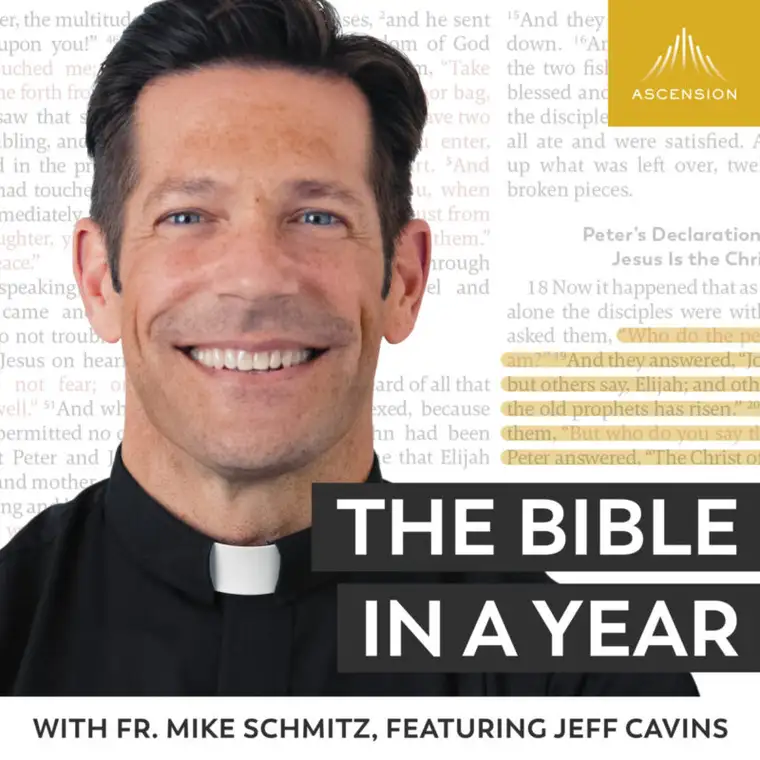
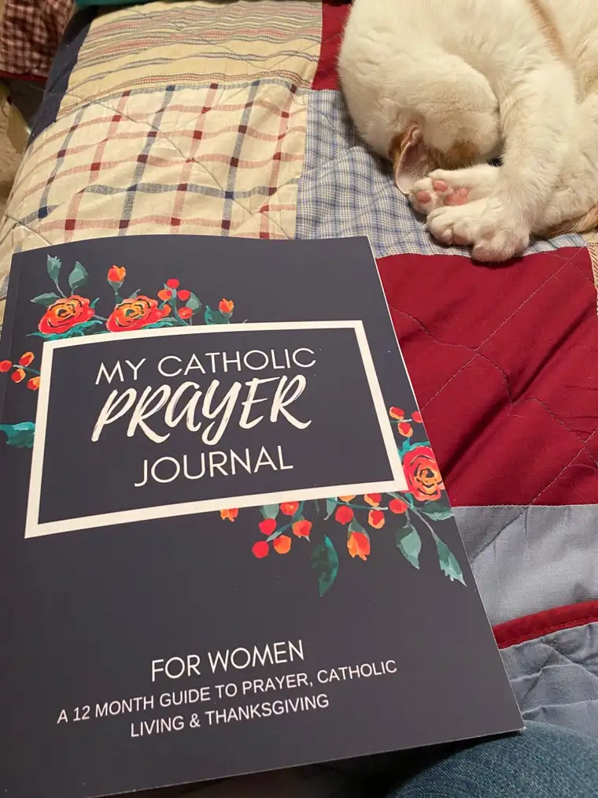
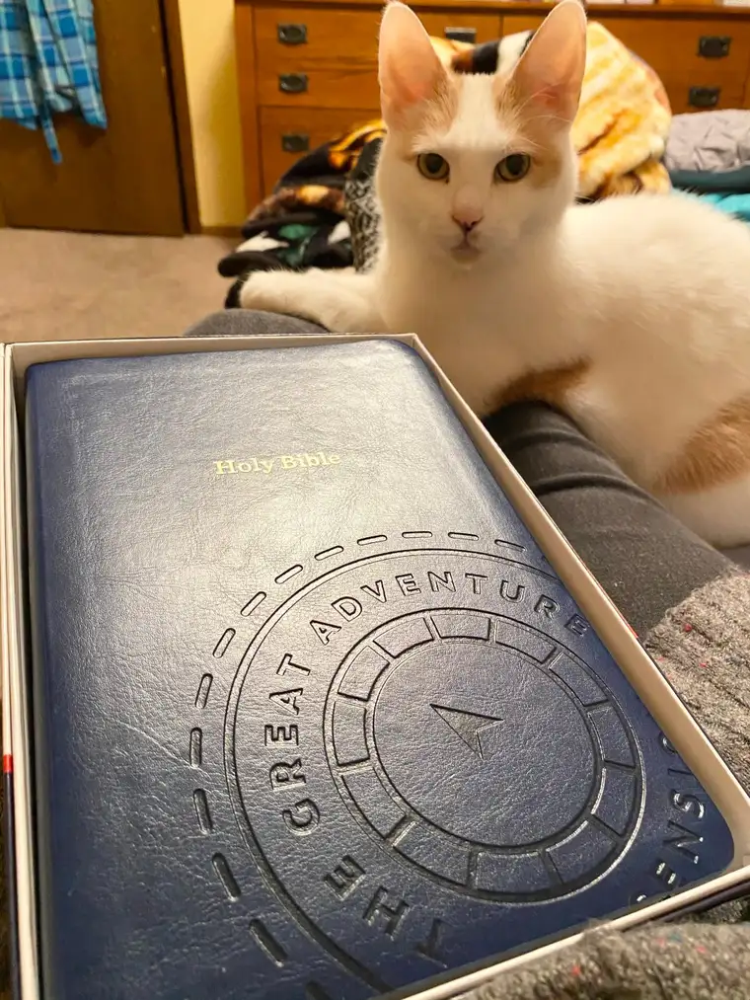

Recently, I met a new friend through an online conference, “A Good Discourse.” Our conversations essentially began with swapping ideas over email about ways we can grow in holiness as Catholic moms and wives, and more recently, how to have, as she (a Bostonian) put it, “The Best Lent Evah!”
In our most recent discourse, we realized we had at least one Lenten commitment in common: The Ascension Press “Bible in a Year” offering, led by Fr. Mike Schmitz. Both of us had begun this journey well ahead of time, with many others, on Jan. 1, 2021. Talk about a well-laid Lenten lead-in!

For two weeks, this journey into reading the Bible in a year (which I’ll refer to from here on out as BIAY) was the number-one podcast in the nation. What? A Catholic podcast about Scripture as the top podcast, out of the hundreds of thousands of options? Yes, it’s true!
Something happened in January that turned the nation’s attention anew to God. We all might have our own speculation as to how this “perfect storm” unfolded, but it would be hard to argue the brilliance of the timing. By Jan. 1, the unrest in our country, not to mention our world, had pressed into us so deeply that many felt desperate for relief. In those moments, God came onto the horizon in the souls of many as a possible antidote — thank God.
I’ll be honest. I was among the skeptics at first that this could possibly set things aright. When my friend Sarah invited me to dive in, I hesitated. At 52, I’ve gained enough wisdom to know that even though an idea might sound very good initially, 365 days is a long time to stick with something new. Did I really have it in me to take on this obligation every single day for the whole next year? Did I trust myself enough to follow through to the end?
I decided to try, in part because Sarah moved to Colorado shortly after we’d become friends, and I saw an opportunity to stay in touch with her and other Catholic friends while sharing our faith, whether near or far. Sarah didn’t make it any easier for me to duck out when she sent me a gift, “My Catholic Prayer Journal,” to help the experience. She also made a solid case by explaining that she planned to listen to the podcasts of BIYA while in the midst of her busy life as a mom of five — whether on her daily drives getting the kids here and there, or while washing the dishes or preparing supper. When I realized it would only take about 20 minutes a day, it became harder to balk.

And so I began, and early on, I decided to make it very official (to keep myself invested and accountable, perhaps), and ordered the Great Adventure Bible (RSV 2nd Catholic Edition) that Fr. Mike uses — just before it sold out. (Thankfully, Ascension is working overtime to produce more of these beautiful books for those in wait.) I absolutely love this Bible! And I’ll admit, I’ve never been so excited about reading Scripture. Our cat Skittles seems to agree.

Here are some of the positives that have happened since I began this journey in January:
- My husband decided to join me a few weeks into it. Though he had a little catching up to do, he’s usually done reading each day by the time I’m starting. I love waking up to sentiments like, “You’re going to love today’s readings,” or “The message from Fr. Mike really hit home today. It was so good.” To be on the same page as my husband in this venture has been an unexpected, beautiful blessing.
- Naturally, the topic of BIYA has come up at dinner time while conversing with our two remaining-at-home kids, teen boys. Even if they don’t join us in our daily readings, they are noting our genuine enthusiasm, and hopefully, we’re planting a seed or two for a time when they, too, find themselves yearning for meaning in this wanting world.
- I’ve discovered two Facebook groups that have joined the BIAY throng, and it’s been fun noting how many people, from all over the world — and even different faiths — have tuned into the podcast with vigor. Through these groups, people have shared visuals of things like vestments worn by priests in the Old Testament, and the Tabernacle tent. As a visual learner, it’s so helpful to have these additional aids, and be part of a wider community learning Scripture together.
- I feel empowered in a positive way. Through the years, I’ve heard, from Protestants and even atheists, that “you Catholics don’t know your Scripture.” Even though we hear Scripture read in full many times throughout our lives as Catholics, we have not always approached the Bible individually with as much commitment as other denominations. We’re now looking at debunking that old accusation.
- I think many will agree that having Fr. Mike be our guide has been pure blessing. Not only are we reading Scripture together (it’s nice to not feel so alone), but he begins each session with a warm welcome, and concludes with a heartfelt prayer, adding, finally, a mini homily that puts what we’ve read in proper perspective. Not only in perspective, but he helps us see how it’s applicable to our lives, right here and now. This truly is the icing on the cake! (I couldn’t help myself. I gave up sweets for Lent.)
And by the way, yes, I’m actually following through! Most days, I read and journal, but on days I’m on the go more, I simply write in the journal, “Listened.” I don’t want anything to stop me from moving forward, including scrupulosity toward how I achieve my daily goal. Some days it’s easier than others – no surprise. But every day, I leave my session feeling a gain.
Some readers likely didn’t need me to point out the pluses; you’re already “there” with me and the rest of the BIYA gang. If you haven’t jumped in, though, I’m here to encourage you. If you feel a tap on the heart, but find yourself saying, “It’s too late,” resist that voice and get on board. In all reality, it’s really still just begun, and I can think of no better Lenten leap than this.
While BIYA isn’t my only Lenten commitment, it’s one I truly feel will help make this Lent be “The Best Lent Evah!” and I, for one, am deeply grateful to Ascension and Fr. Mike for what they’ve done here. I really believe this tool will help our Lord draw souls to heaven. And hopefully, edify everyone who participates as much as I have been so far.
I use Spotify to hear the podcast each day on my Smartphone, but you can use any podcast platform. Go to Ascension Press website for more, and to download the reading plan that helps track progress.
My final words: Just do it!
Q4U: Are you involved in any Scripture study program? What are you learning so far?